Cindy's Activity Portfolio
Menlo Manor English Classes for Seniors - Founder and Lead Teacher
(2023-2025)
Organize and lead educational sessions for elderly Chinese immigrants, designing activities to support language learning and community engagement.
Teach conversational English and practical phrases to help participants navigate everyday interactions, such as grocery shopping, doctor visits, and public transportation.
Provide one-on-one assistance to improve communication skills, empowering seniors to handle basic daily tasks more independently and confidently in English.
Teach conversational English and practical phrases to help participants navigate everyday interactions, such as grocery shopping, doctor visits, and public transportation.
Provide one-on-one assistance to improve communication skills, empowering seniors to handle basic daily tasks more independently and confidently in English.


Diamond Challenge Business Competition - Ambassador and Team Leader
(2024-2025)
Led a team of two to compete in the Diamond Challenge Business Competition at the University of Delaware, applying entrepreneurial skills to a global contest.
Created a business model for a social media platform app aimed at connecting communities and improving communication within towns and cities.
Coded a prototype of the app, tested operations, and created an engaging pitch video for contest submission.
Attended the 2025 Limitless World Summit as an ambassador and was honored with the Emerging Innovator Top 100 Award for this project.
Created a business model for a social media platform app aimed at connecting communities and improving communication within towns and cities.
Coded a prototype of the app, tested operations, and created an engaging pitch video for contest submission.
Attended the 2025 Limitless World Summit as an ambassador and was honored with the Emerging Innovator Top 100 Award for this project.
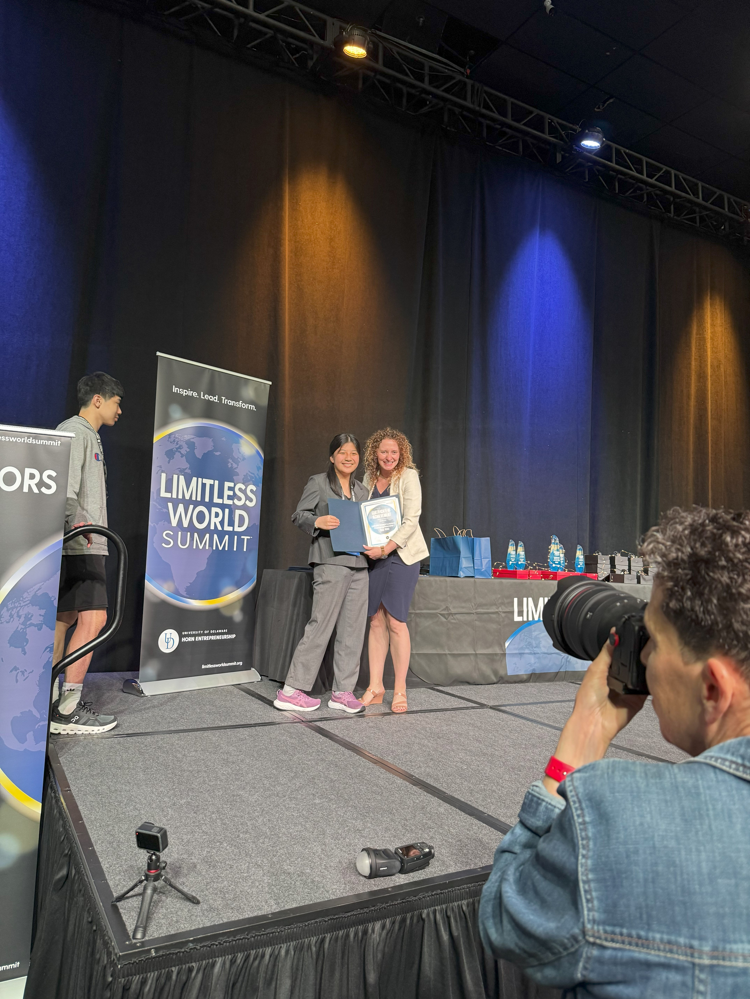
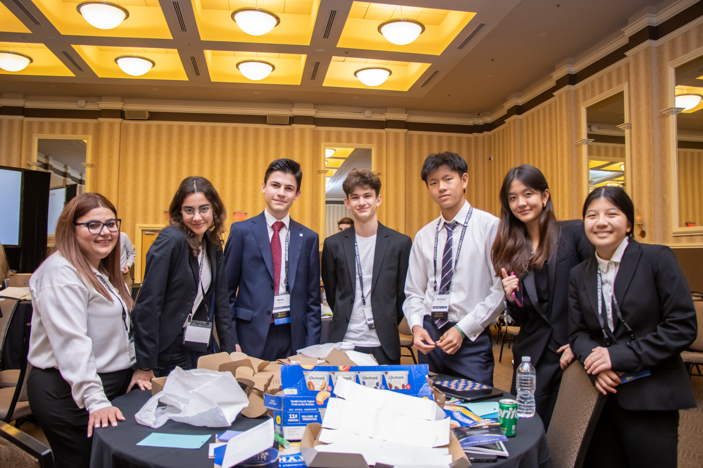
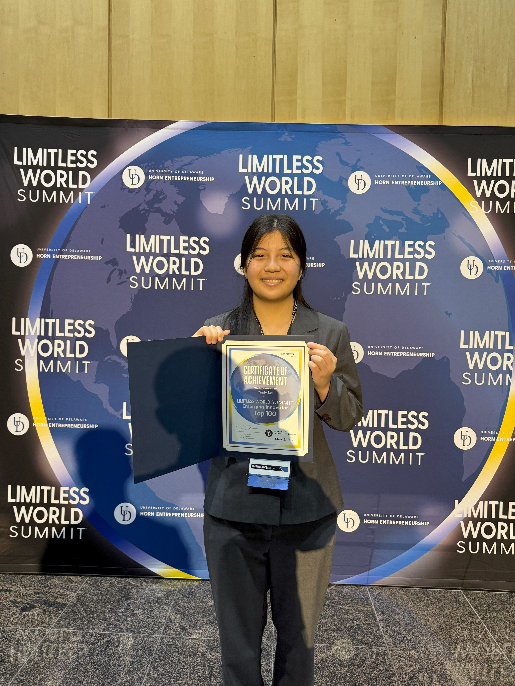
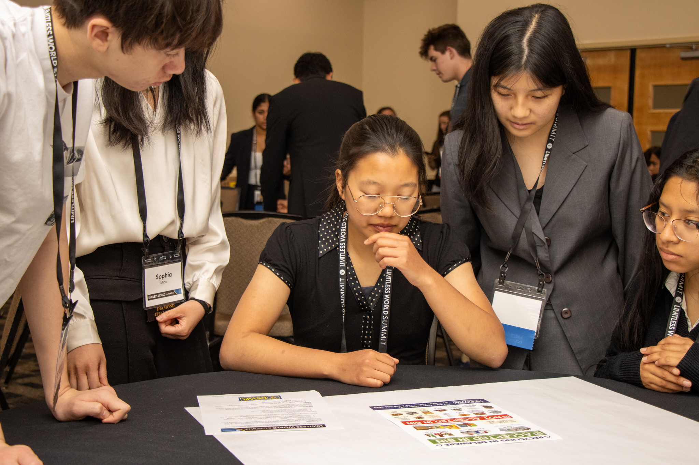
 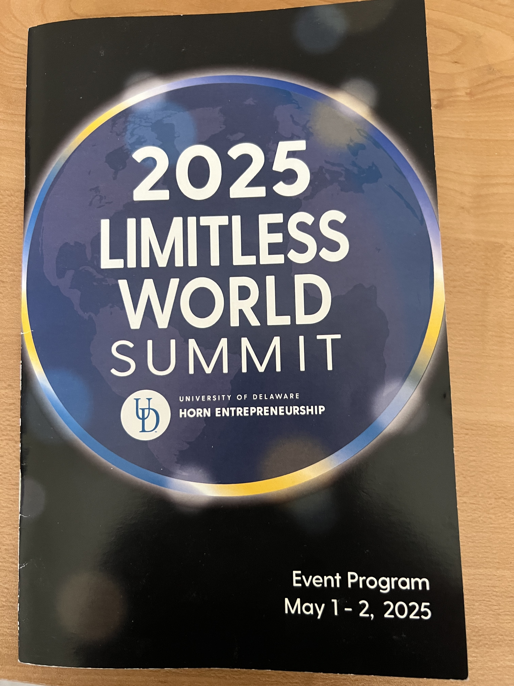
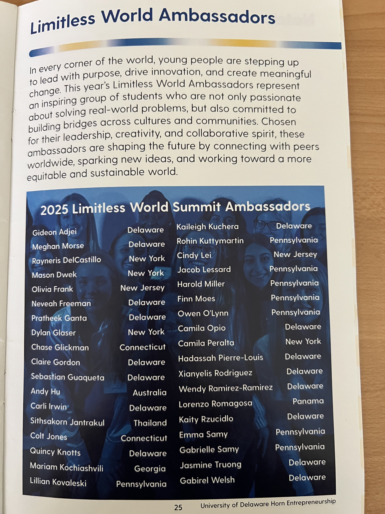
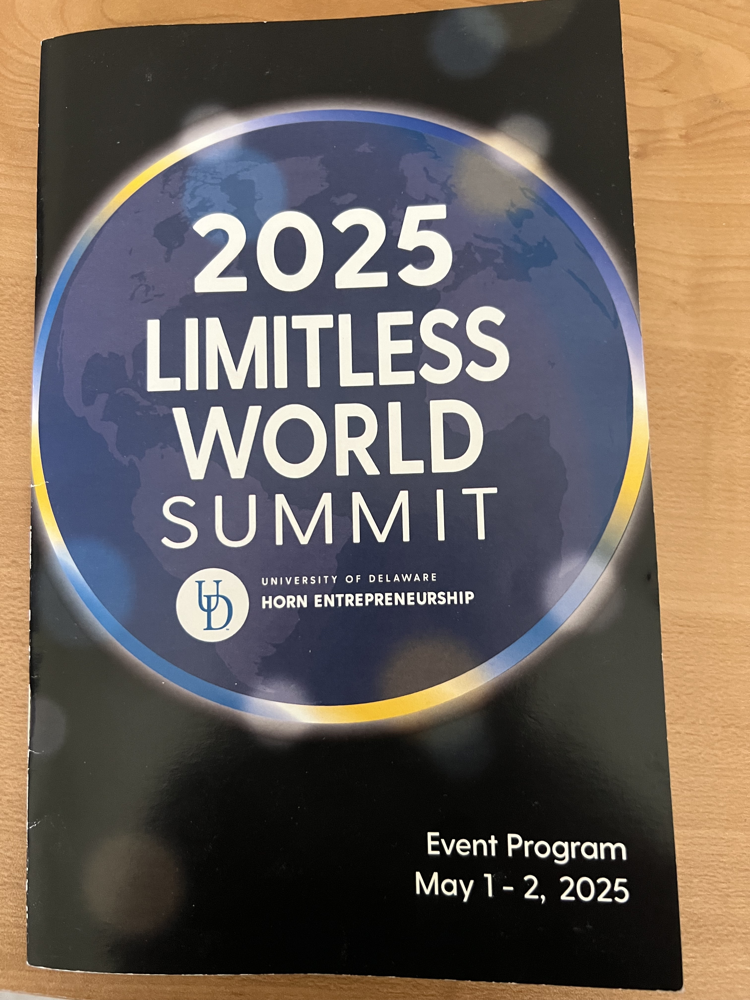
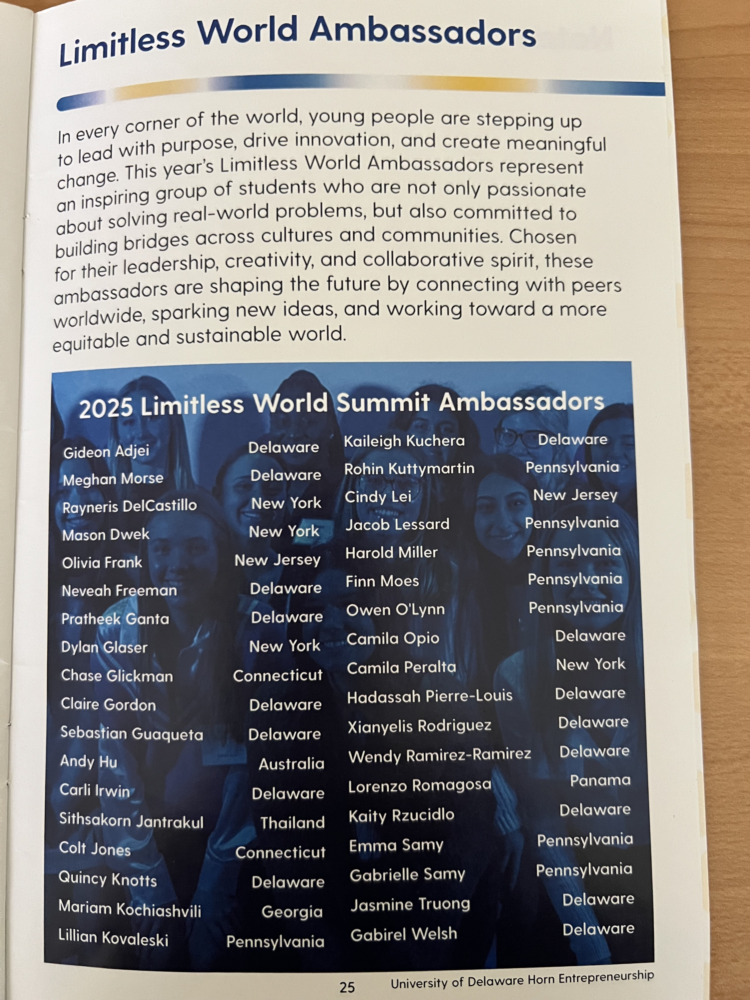

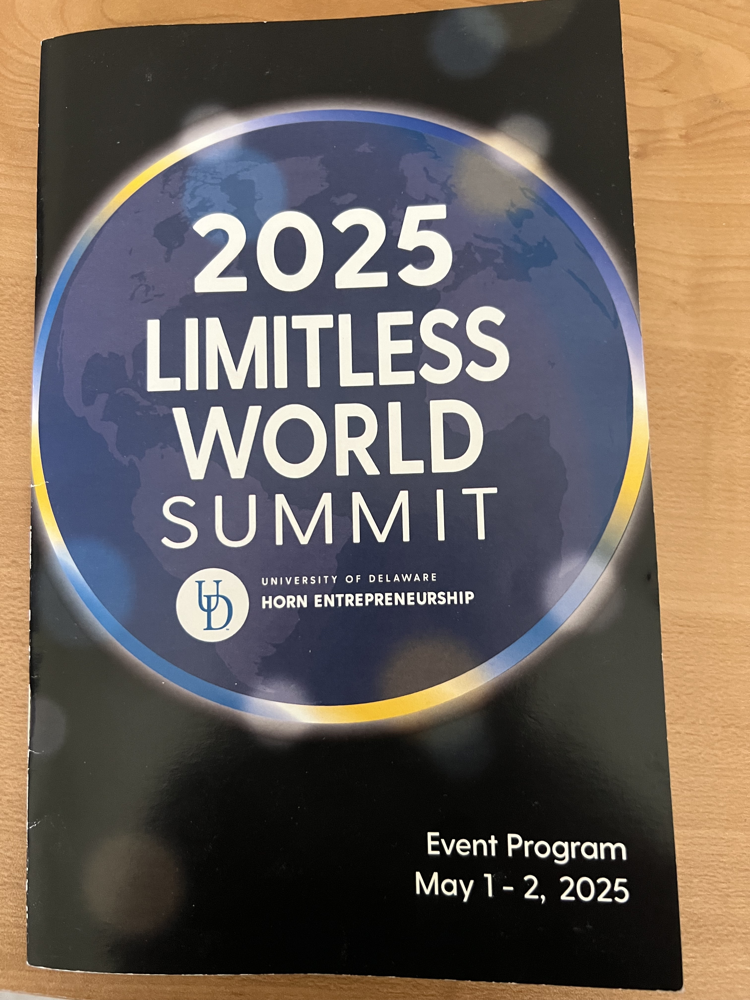
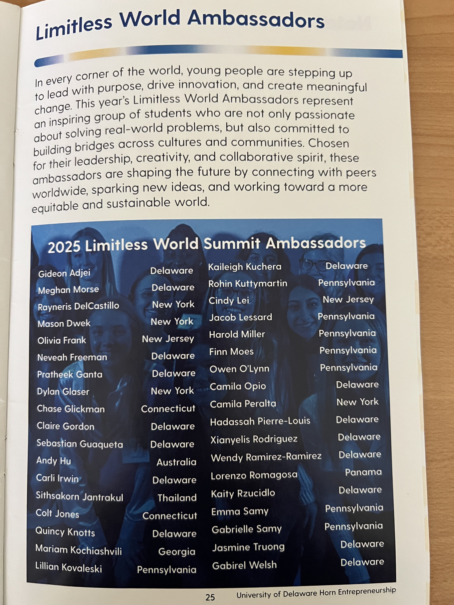
Bressaw's Middlesex Shukokai Karate - Brown Belt and Assistant Teacher
(2016-2025)
Train in karate 2–3 times per week since age 7, building strong discipline and commitment, currently working toward Black Belt.
Achieved brown belt status through mastering advanced techniques and skills.
Won 1st place in Kumite at Shukokai Karate tournaments, demonstrating high-level martial ability.
Assist in weekend classes by sparring with students, offering feedback, and reinforcing dojo etiquette and safety.
Improve overall fitness, endurance, and mindset, enhancing both physical health and self‑defense knowledge.
Achieved brown belt status through mastering advanced techniques and skills.
Won 1st place in Kumite at Shukokai Karate tournaments, demonstrating high-level martial ability.
Assist in weekend classes by sparring with students, offering feedback, and reinforcing dojo etiquette and safety.
Improve overall fitness, endurance, and mindset, enhancing both physical health and self‑defense knowledge.
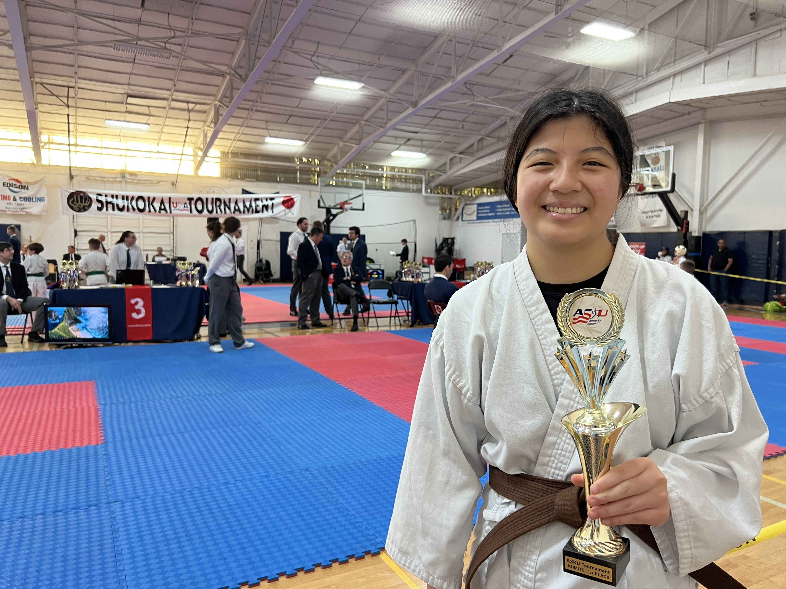
Congressional App Challenge 2024 - Lead Coder
(2023-2024)
Developed an app to mimic the community bulletin board at the Edison Public Library to enhance local communication.
Coded app utilizing Java to create a functional product accessible to community members from any device.
Submitted project to the Congressional App Challenge hosted by the U.S. House of Representatives.
Coded app utilizing Java to create a functional product accessible to community members from any device.
Submitted project to the Congressional App Challenge hosted by the U.S. House of Representatives.
John P. Stevens Track and Field Team - Team Member
(2023-2025)
Compete in short-distance track events, including 100 and 200-meter sprints.
Represent the school in multiple track meets, gaining experience in competitive sprinting environments.
Improve speed and endurance through consistent daily practice.
Cultivate a strong mindset to overcome challenges and maintain focus.
Represent the school in multiple track meets, gaining experience in competitive sprinting environments.
Improve speed and endurance through consistent daily practice.
Cultivate a strong mindset to overcome challenges and maintain focus.
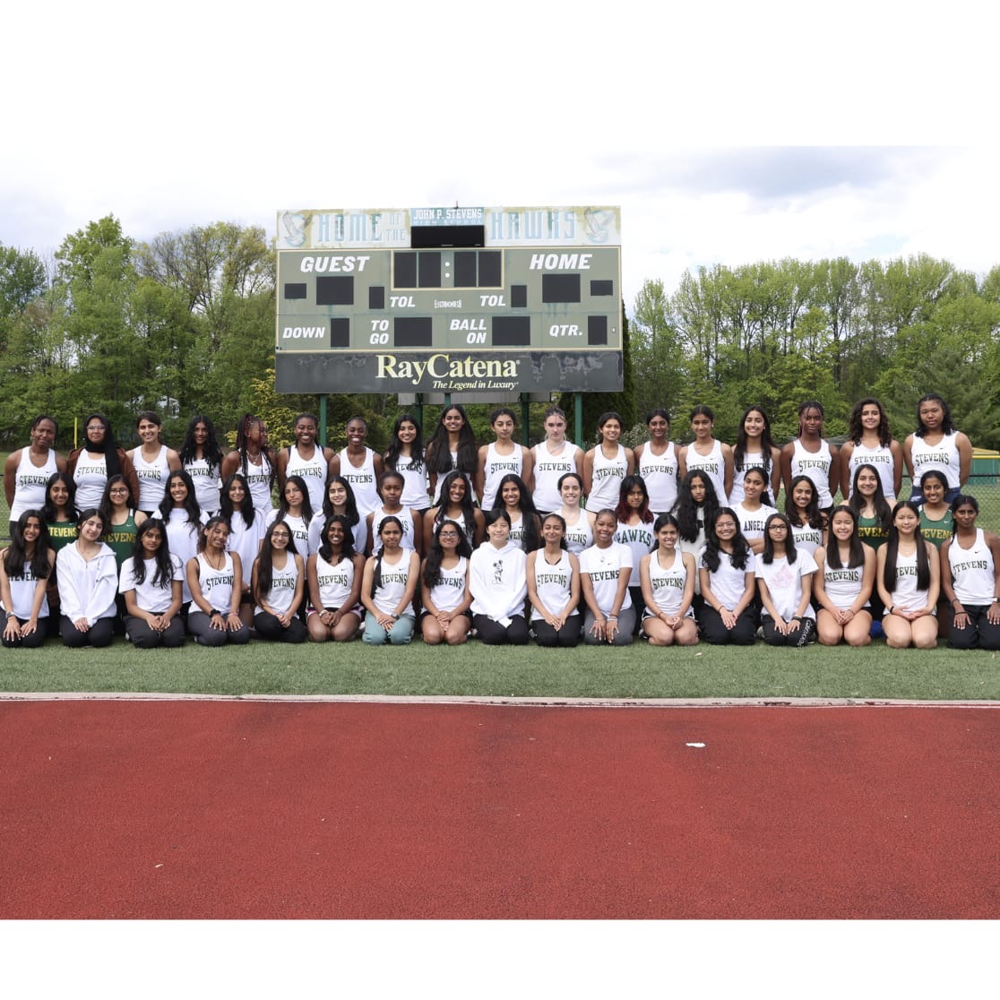
AWARDS & ACCOMPLISHMENTS
- National Merit Semifinalist, 2026
- National Honor Society, Grade 10
- National English Honor Society, Grade 11
- Top 100 Innovator and 2025 Limitless World Summit Ambassador - Diamond Challenge, University of Delaware Horn Entrepreneurship Competition, Grade 11
- 1st Place in Kumite in both the 2024 and 2025 Karate Tournaments, Grades 10 - 11
- AP Scholar with Distinction, Grades 10 and 11
- 2025 National Recognition Program, Grade 11